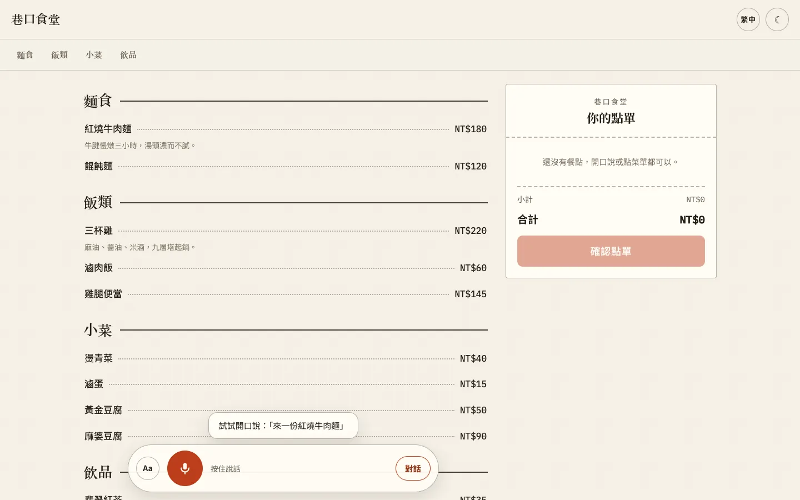
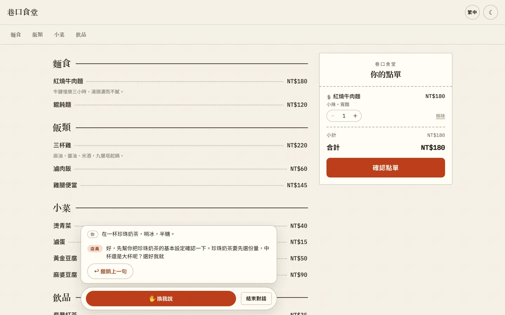
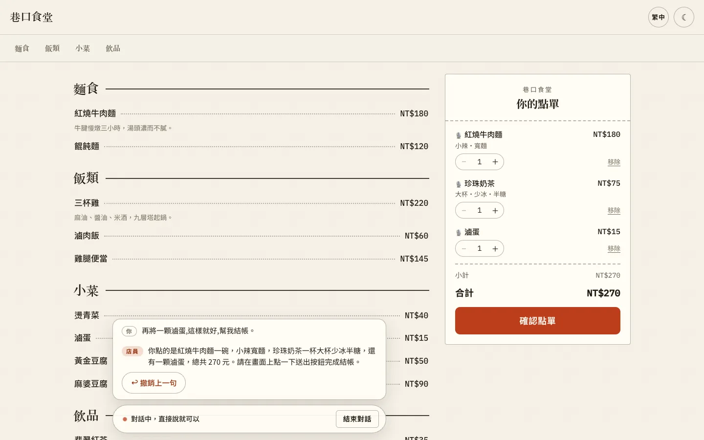
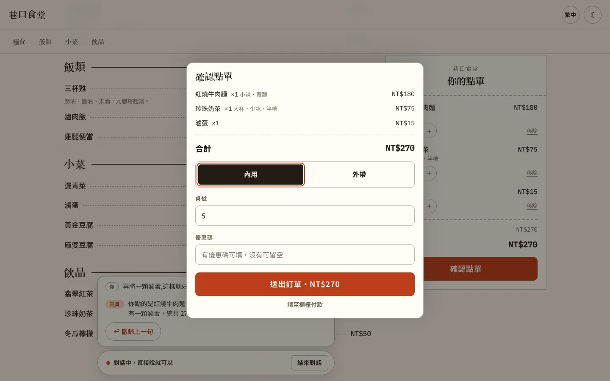
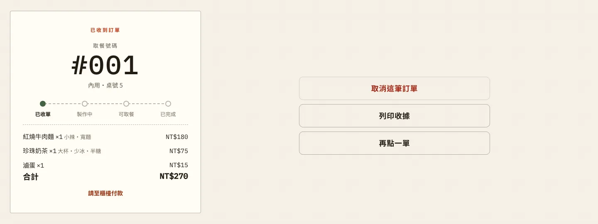
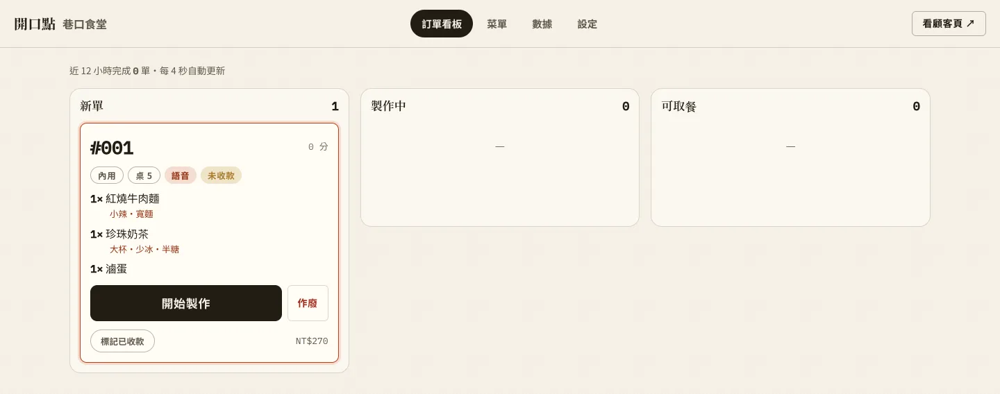
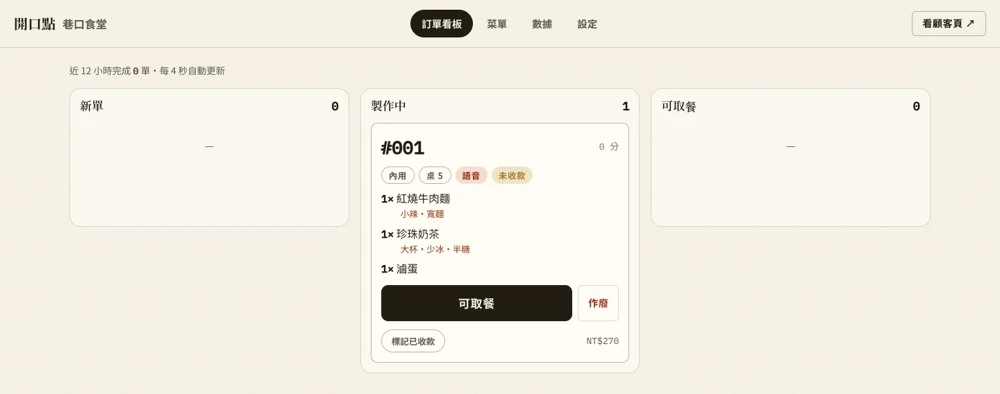
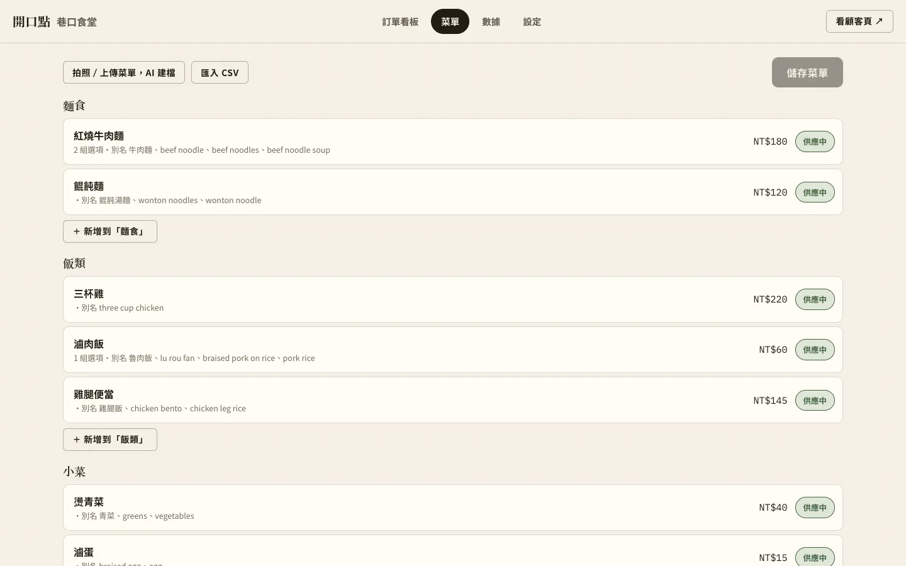
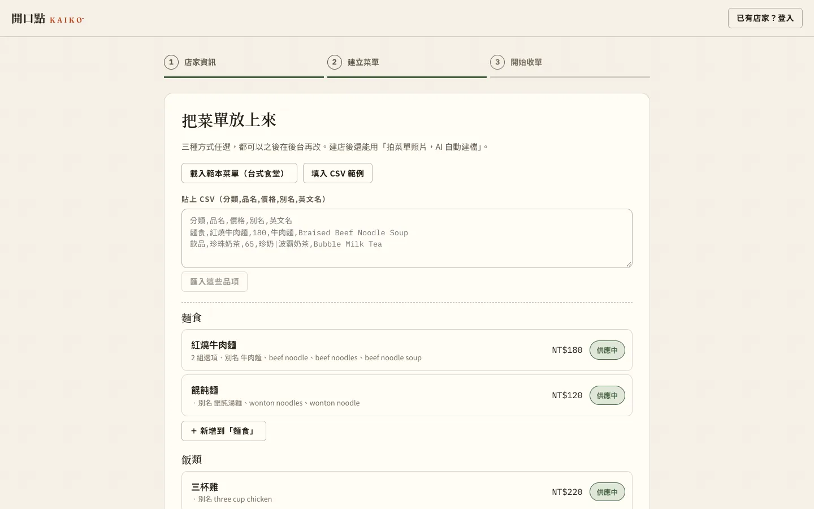
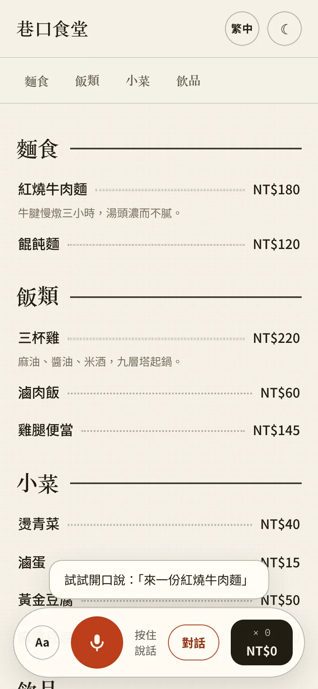

Case study · Voice ordering
KAIKŌ 開口點
Multi-tenant voice ordering: customers order by talking, merchants set up a store in minutes.
Recorded from a local run of the app with a template store (巷口食堂, “Xiangkou Diner”) and a synthetic customer voice (text-to-speech). The waiter is the real OpenAI Realtime model, speaking Mandarin; the English captions translate both sides and mark each tool call. 90 seconds with sound. Only waits on the recording side (connecting, pauses before each scripted line, page navigation) were trimmed, 8.67 s in total; the model's response times are left as they were.
What it does
Customer scans a QR code, opens the store page
- Talk to a waiter. A Conversation button starts an OpenAI Realtime voice session. The waiter asks for required options before adding an item; in the recording it asked for the milk tea size first.
- Fallbacks. Without Realtime, hold-to-talk uses the browser's speech recognition. Typing and tapping the menu always work, on the same order state.
- A receipt, not a cart. The order is a paper-style ticket; items added by voice carry a mic badge, and quantities stay editable by hand.
- Checkout and status. Dine-in or takeout, table number, optional discount code. The status page shows the pickup number and progress, and lets the customer cancel while the order is still at “received” or print a receipt.
- Four languages. Traditional Chinese, Simplified Chinese, English and Japanese, for the interface, the menu and the waiter.
Merchant no account system, one admin key per store
- Three-step setup. Store name and URL slug, then a menu from a template, pasted CSV or manual entry, then a printable QR code and the store's admin key.
- Menu editor. Import from a menu photo (needs an LLM key) or CSV, edit option groups and spoken aliases in Chinese and English, toggle items sold out.
- Kitchen display. New, In progress and Ready columns, refreshed every 4 seconds. Cards show dine-in or takeout, table, a voice tag and a paid or unpaid tag, with Start, Void and Mark paid.
- Keys and history. The admin key is kept only as a SHA-256 hash; orders keep a snapshot of each line's price, so later menu edits do not change past orders.
How the voice path works
Three input tiers share one order. The model never writes to the ticket directly: it proposes tool calls, the browser hands each one to the server, and only the cart operations the server returns are applied.
- The browser asks the server for a voice session. The server calls OpenAI's client-secret endpoint and returns a secret that expires after 300 seconds, so the API key never reaches the browser. Minting is rate limited per store and per IP.
- The browser connects to OpenAI Realtime over WebRTC with that secret: audio both ways, plus an
oai-eventsdata channel that carries transcripts and tool calls. - When the model calls a tool (
add_items,set_choice,confirm_orderand six others), the browser posts it to the server with the count of customer speech turns heard and the turn's transcript. - The server checks it against the store's menu: the item exists and is not sold out, required options are chosen, allergens the customer named are avoided, and the customer has actually spoken. It returns cart operations, the browser applies them to the ticket, and the result goes back to the model.
- Without Realtime, recognised speech or typed text goes to
interpret. With a key, an LLM (Claude when its key is set, otherwisegpt-4.1-mini) parses it and the server validates the result; any item id not on the menu discards the whole reply. With no key, a failed check or the daily budget spent, the built-in parser handles Chinese and English. - The voice flow ends by asking the customer to tap Submit; it never submits on its own. The server recomputes every price from the menu, and the order shows up on the kitchen display.
Response times per turn were 3.2, 1.9, 3.7 and 2.3 s, measured on the recording's audio. They include the 600 ms silence window the voice detector waits for, and turns 1 and 3 include a tool call and a second response before the waiter speaks.
Engineering notes
-
The model speaks only when asked
An earlier build had a waiter that answered nobody in a quiet room. The cause was server-side auto-response: OpenAI's turn detection defaults
create_responseto true. KAIKŌ setscreate_response:falseandinterrupt_response:falsewhen it mints the session, then sends them again in asession.updateonce the call is live, because the settings in the token were only partly applied.The browser creates a response in three places only: the greeting, each committed customer turn, and each tool result. The mic track is switched off while the waiter is audible and reopened 600 ms after it goes quiet. A “let me talk” button cancels the current response and opens the mic, so interrupting does not depend on echo cancellation.
-
A transcription model that does not invent phrases
whisper-1produced stock phrases from near-silence. Input transcription now usesgpt-realtime-whisperwith a language hint for the session, plus near-field noise reduction. As a last check, the server refusesadd_itemswhen the customer has not spoken yet in the session, or when the turn's transcript has fewer than two meaningful characters. -
Rate limits and daily budgets
Fixed-window limits are stored in D1 and set in
wrangler.tomland the server code. Voice sessions: 20 a minute per store and 10 per IP, with a globalREALTIME_DAILY_BUDGETof 2000 a day. Text parsing: 30 a minute per IP and a globalLLM_DAILY_BUDGETof 5000 a day; past the budget it falls back to the local parser instead of failing. Orders: 10 a minute per IP and 120 per store. Creating a store: 5 a minute per IP. -
The server owns the money
Prices are recomputed from the menu on every order, and unknown item ids are rejected. If the merchant changes a price or an option while someone is ordering, submit returns a line-by-line diff and asks the customer to confirm again rather than charging the new price.
-
Tests
118 vitest tests in 7 files pass: parser 38, API 26, tools 24, ask 14, money 11, translate 3, i18n 2. The API tests run the routes against an in-memory D1 stand-in on better-sqlite3 and cover auth, isolation between stores, price recomputation, duplicate orders, invalid state changes and rate limits. Live WebRTC speech cannot run in a unit test, which is why the voice path is shown here as a recording.
Screens
Captured from the same local run. The app's interface was set to Traditional Chinese, matching the recording.









